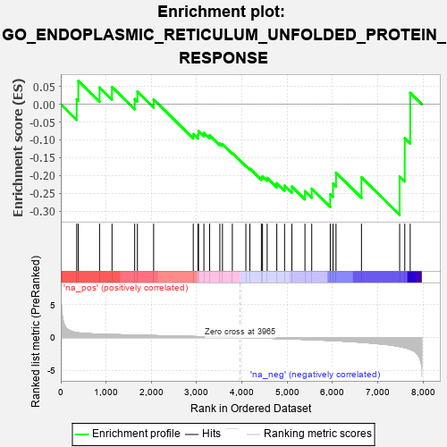
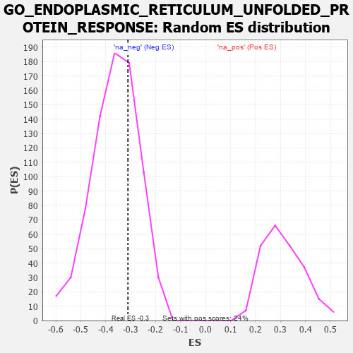

| | | Dataset | 7d |
| Phenotype | NoPhenotypeAvailable |
| Upregulated in class | na_neg |
| GeneSet | GO_ENDOPLASMIC_RETICULUM_UNFOLDED_PROTEIN_RESPONSE |
| Enrichment Score (ES) | -0.3110273 |
| Normalized Enrichment Score (NES) | -0.85634977 |
| Nominal p-value | 0.6810458 |
| FDR q-value | 0.9783982 |
| FWER p-Value | 1.0 |
Table: GSEA Results Summary

Fig 1: Enrichment plot: GO_ENDOPLASMIC_RETICULUM_UNFOLDED_PROTEIN_RESPONSE
Profile of the Running ES Score & Positions of GeneSet Members on the Rank Ordered List
| PROBE | GENE SYMBOL | GENE_TITLE | RANK IN GENE LIST | RANK METRIC SCORE | RUNNING ES | CORE ENRICHMENT | | 1 | GSK3A | | | 351 | 0.745 | 0.0143 | No |
| 2 | BAX | | | 387 | 0.711 | 0.0657 | No |
| 3 | AMFR | | | 856 | 0.518 | 0.0474 | No |
| 4 | NCK2 | | | 1131 | 0.458 | 0.0488 | No |
| 5 | DERL2 | | | 1632 | 0.368 | 0.0148 | No |
| 6 | HYOU1 | | | 1692 | 0.358 | 0.0354 | No |
| 7 | GOSR2 | | | 2050 | 0.298 | 0.0139 | No |
| 8 | ERO1A | | | 2925 | 0.162 | -0.0835 | No |
| 9 | TLN1 | | | 3030 | 0.145 | -0.0852 | No |
| 10 | UFL1 | | | 3041 | 0.144 | -0.0752 | No |
| 11 | ERN2 | | | 3160 | 0.129 | -0.0799 | No |
| 12 | SERP2 | | | 3286 | 0.108 | -0.0872 | No |
| 13 | PDIA6 | | | 3512 | 0.075 | -0.1096 | No |
| 14 | DERL1 | | | 3570 | 0.065 | -0.1117 | No |
| 15 | SRPRA | | | 3788 | 0.029 | -0.1368 | No |
| 16 | FICD | | | 4087 | -0.022 | -0.1726 | No |
| 17 | TBL2 | | | 4175 | -0.038 | -0.1806 | No |
| 18 | MYDGF | | | 4429 | -0.081 | -0.2060 | No |
| 19 | SYVN1 | | | 4454 | -0.085 | -0.2023 | No |
| 20 | CXXC1 | | | 4557 | -0.107 | -0.2068 | No |
| 21 | SRPRB | | | 4769 | -0.151 | -0.2215 | No |
| 22 | EP300 | | | 4941 | -0.186 | -0.2284 | No |
| 23 | DDX11 | | | 5102 | -0.225 | -0.2310 | No |
| 24 | SSR1 | | | 5391 | -0.294 | -0.2442 | No |
| 25 | EDEM1 | | | 5541 | -0.331 | -0.2369 | No |
| 26 | DCTN1 | | | 5950 | -0.454 | -0.2527 | Yes |
| 27 | XBP1 | | | 6011 | -0.475 | -0.2229 | Yes |
| 28 | CALR | | | 6077 | -0.499 | -0.1920 | Yes |
| 29 | PDIA5 | | | 6639 | -0.734 | -0.2050 | Yes |
| 30 | VAPB | | | 7482 | -1.378 | -0.2028 | Yes |
| 31 | ASNS | | | 7595 | -1.547 | -0.0954 | Yes |
| 32 | BOK | | | 7715 | -1.817 | 0.0322 | Yes |
Table: GSEA details [plain text format]

Fig 2: GO_ENDOPLASMIC_RETICULUM_UNFOLDED_PROTEIN_RESPONSE: Random ES distribution
Gene set null distribution of ES for GO_ENDOPLASMIC_RETICULUM_UNFOLDED_PROTEIN_RESPONSE